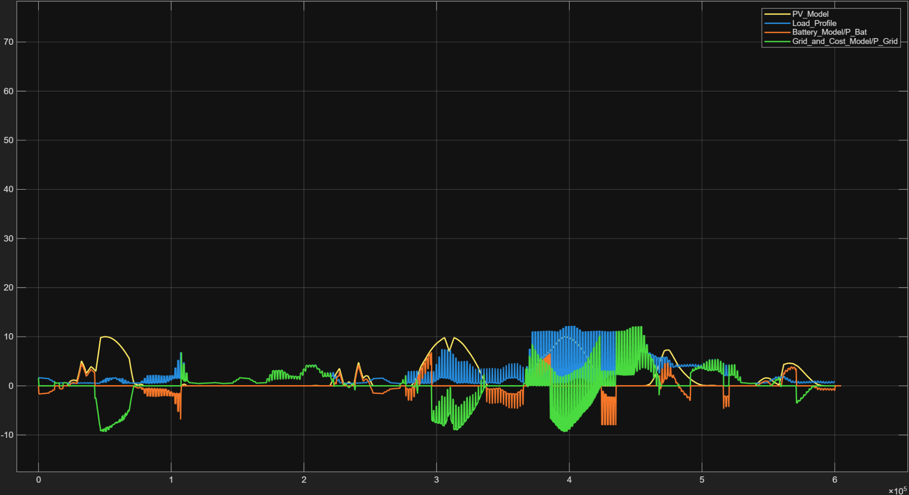

01
Medical Robot Gripper
Development of a sterilization-oriented quick-change concept for robotic surgical instruments. The project received third place at the MittelstandsMakerthon NRW.
Project overview →
Mechanical Engineer focused on product development, robotics, manufacturing, automation and simulation.
I am a Mechanical Engineering master's student at Dortmund University of Applied Sciences, specializing in Product Development and Simulation. I enjoy turning technical challenges into practical solutions through mechanical design, manufacturing, automation and analytical thinking.
A selection of projects involving robotics, automation and manufacturing technology.
Development of a sterilization-oriented quick-change concept for robotic surgical instruments. The project received third place at the MittelstandsMakerthon NRW.
Project overview →
Development of a controlled shutdown sequence in NI LabVIEW to improve test-bench safety and system behavior.
View automation project →
Bachelor's thesis focused on a dual-purpose machine combining FDM 3D printing and laser engraving on one motion platform.
View thesis project →
Simulation of a photovoltaic system with battery storage, grid interaction, state-based energy management and cost evaluation.
View simulation project →Tools and disciplines I use to design, build, test and improve engineering systems.
Independent recognition of engineering work and certified language proficiency for German and international professional environments.
Awarded for an innovative quick-change concept for robotic surgical instruments, developed as part of a student engineering team.
View certificate ↗ LanguageCertified advanced German proficiency for academic study and professional technical communication.
View certificate ↗ LanguageAdvanced English proficiency demonstrated through the IELTS Academic examination for international study and work.
View certificate ↗I am open to engineering opportunities, technical collaborations and conversations about product development, robotics and manufacturing.